07–08/11/2026 · Bản local df17547 · Không sửa mã ứng dụng
21 ảnh ghi nhận thao tác trên trình duyệt. Bấm ảnh để xem bản gốc. Báo cáo phân biệt rõ lỗi đã tái hiện, kiểm tra tự động và nhánh mới xác định từ code.
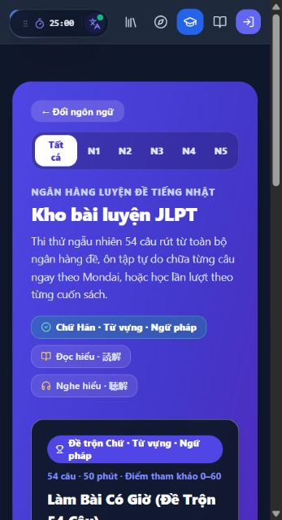
Bố cục trang đầu.
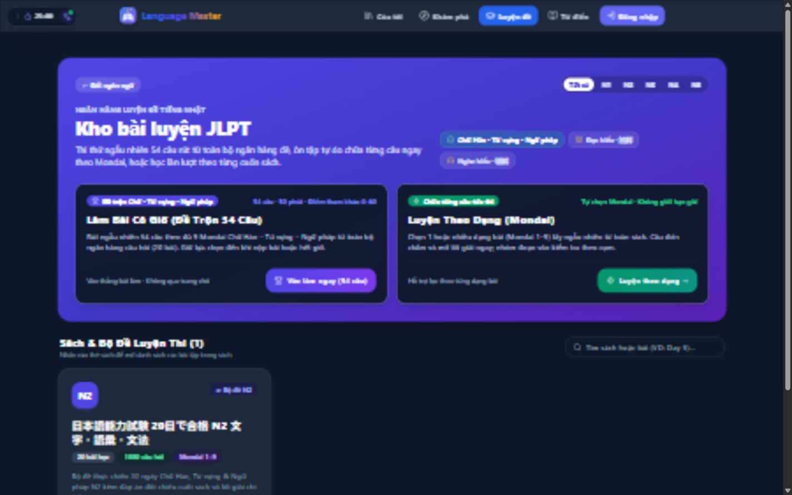
Hai lối vào chính và thư viện sách.
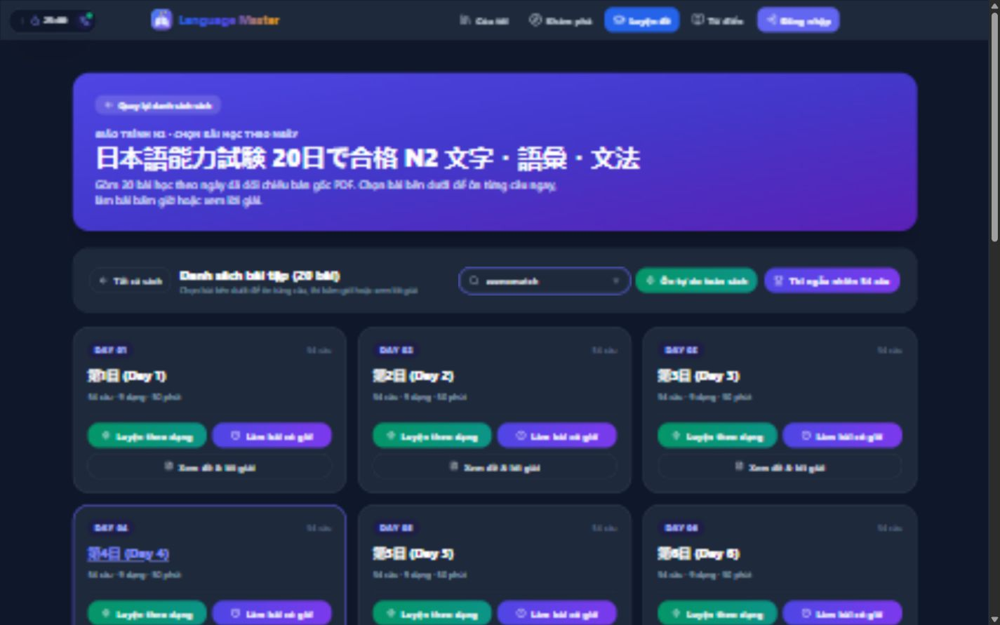
Từ khóa zzznomatch không trả trạng thái rỗng.
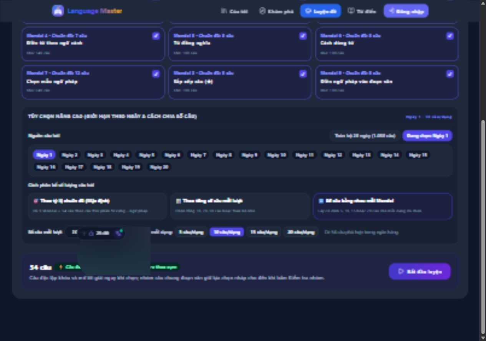
Ngày 1, cả 9 Mondai, 10 câu mỗi dạng.
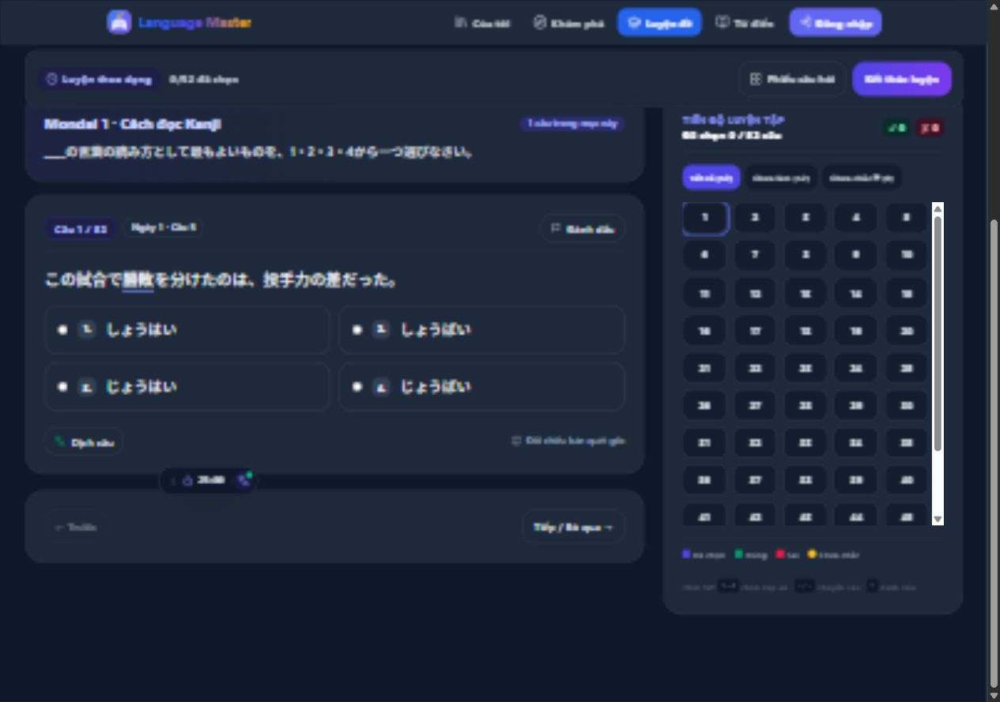
Đối chiếu với ảnh thiết lập ngay trước.
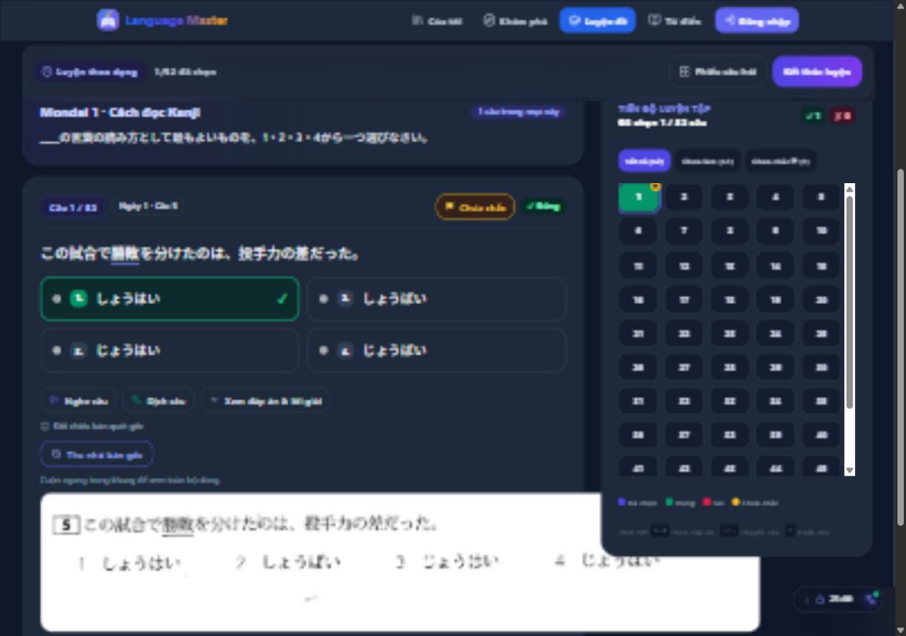
Bản quét mở và phóng to được.
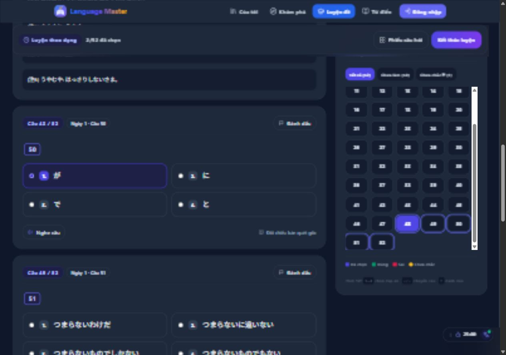
Chọn một đáp án chưa làm lộ đúng/sai.
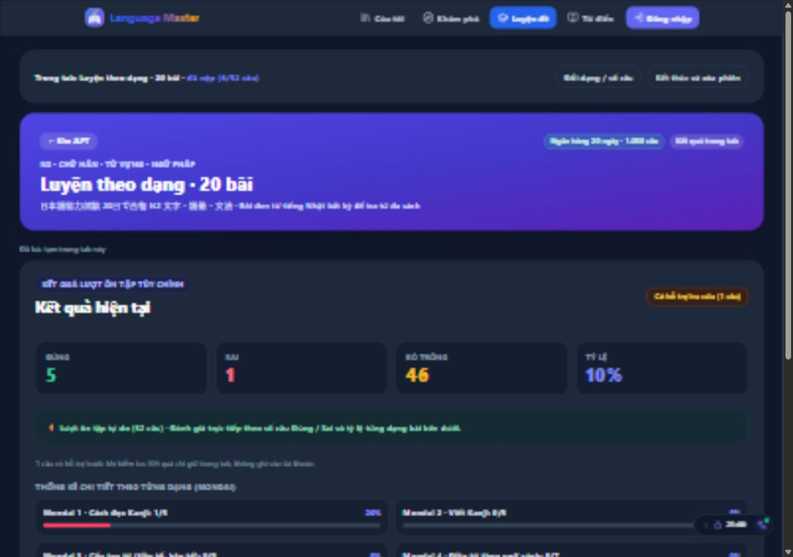
Chỉ bấm dịch sau khi câu đơn đã khóa.
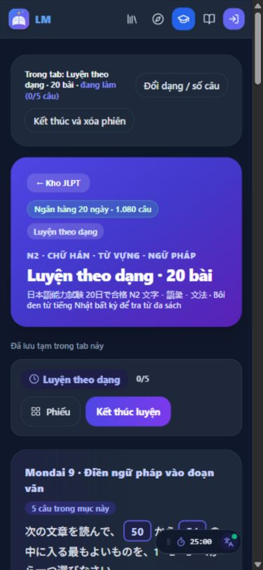
Lượt mới giữ nguyên 5 câu.
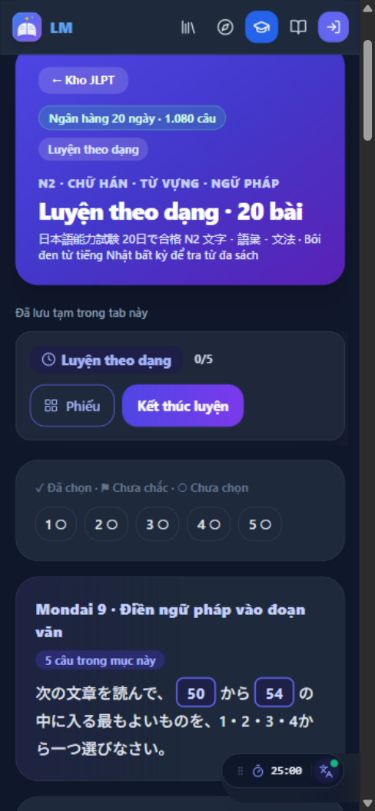
Mở được phiếu và chọn câu.
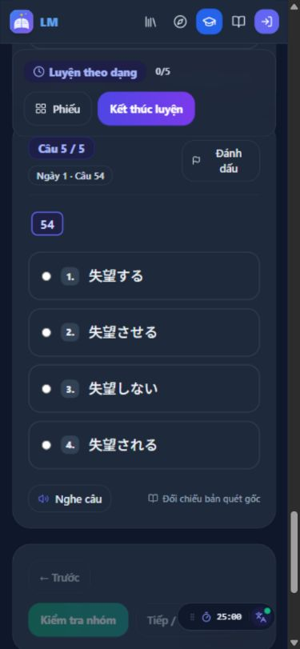
Câu thứ 5 trong lượt, câu nguồn 54; không tràn ngang.
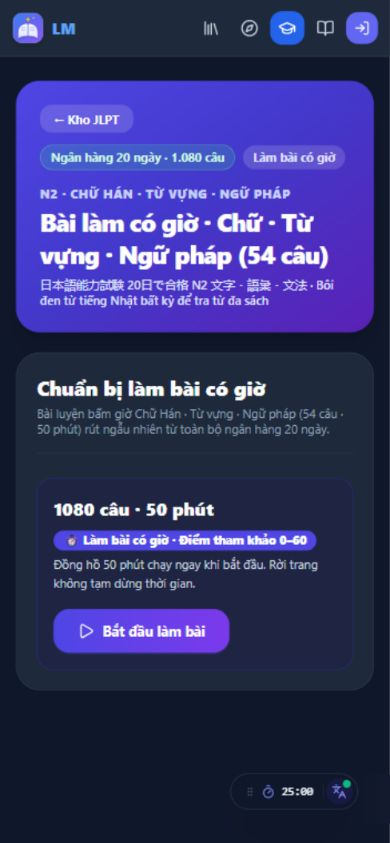
Mâu thuẫn ngay trên màn hình chuẩn bị.
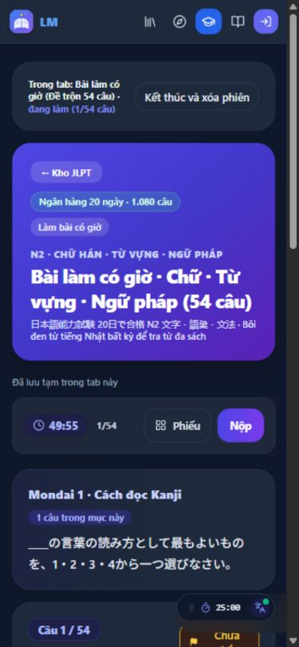
Đáp án đổi được, có đánh dấu; chưa chấm trước nộp.
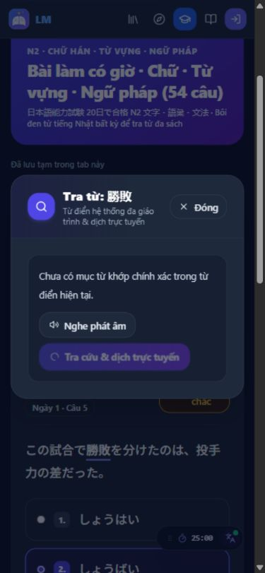
Tra từ 勝敗 trong câu hỏi.
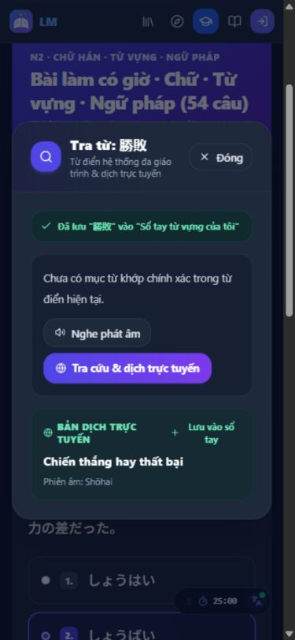
Có bản dịch và thông báo lưu thành công.
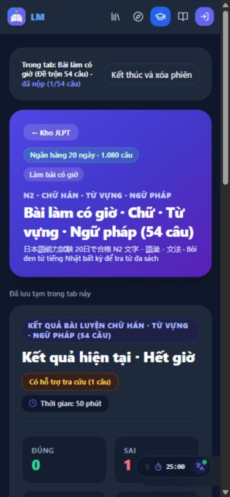
Đã quan sát trạng thái Hết giờ, thời gian 50 phút.
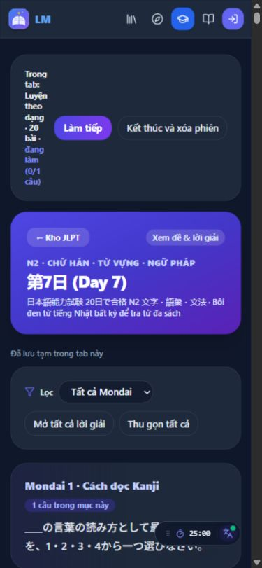
Tên bài đang dở xuống gần từng từ trên màn hình nhỏ.
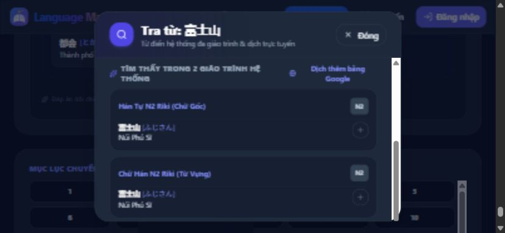
Cuộn trong hộp được, thấy nguồn từ hai giáo trình.
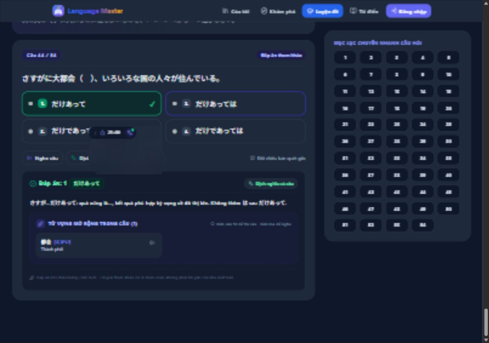
QA-06: mục lục vẫn hiển thị cả câu ngoài bộ lọc; đã bấm và xác nhận thiếu đích.
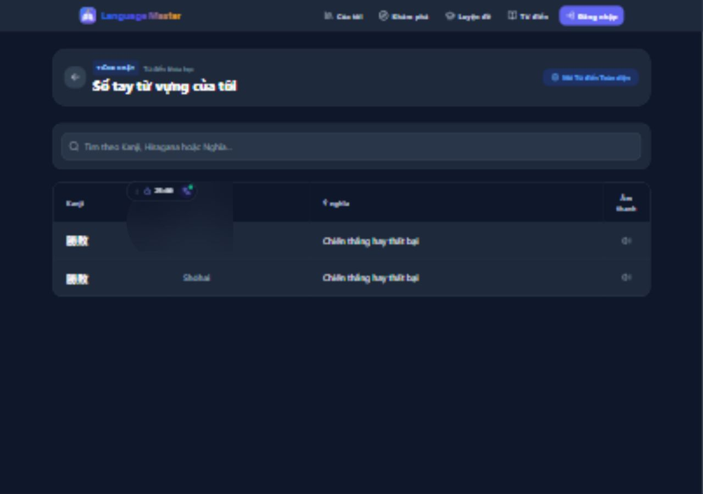
Hai lần lưu tạo hai dòng 勝敗 cùng nghĩa.
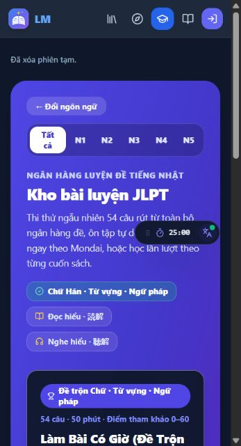
Đã xóa phiên JLPT thử, giữ trang để xem.